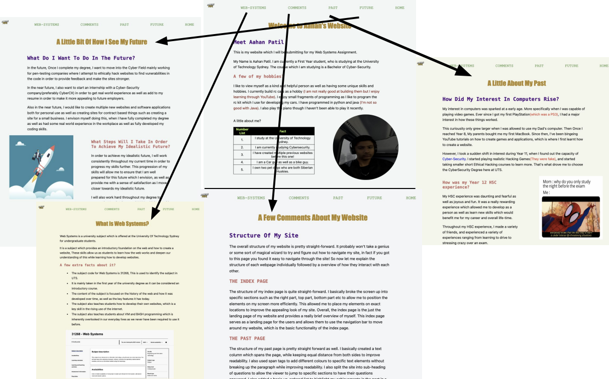
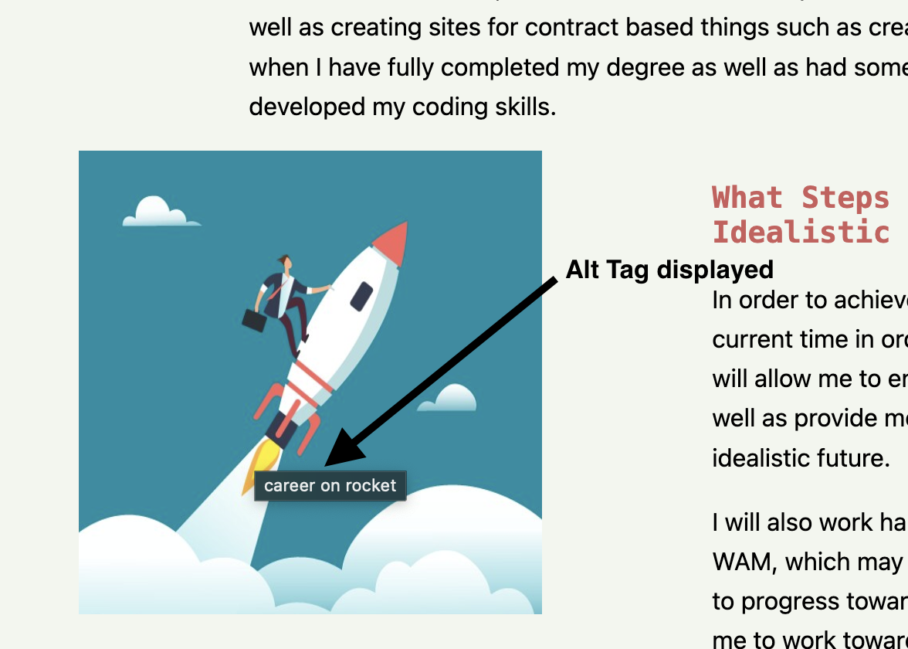
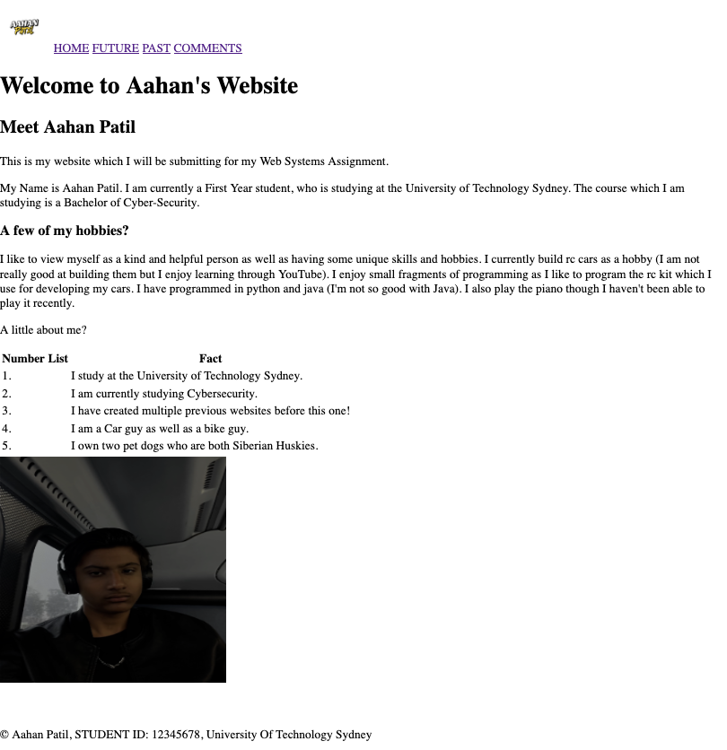
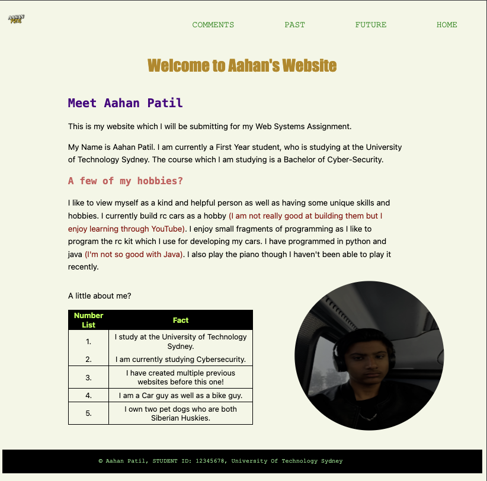

The overall structure of my website is pretty straight-forward. It probably won't take a genius or some sort of magical wizard to try and figure out how to navigate my site, in fact if you got to this page you found it easy to navigate through the site! So now let me explain the structure of each webpage individually followed by a overview of how they interact with each other.
The structure of my index page is quite straight-forward. I basically broke the screen up into specific sections such as the right part, top part, bottom part etc to allow me to position the elements on my screen more efficiently. This allowed me to place my elements on exact locations to improve the appealing look of my site. Overall, the index page is the just the landing page of my website and provides a really brief overview of myself. This index page serves as a landing page for the users and allows them to use the navigation bar to move around my website, which is the basic functionality of the index page.
The structure of my past page is pretty straight forward as well. I basically created a text column which spans the page, while keeping equal distance from both sides to improve readability. I also used span tags to add different colours to specific text elements without breaking up the paragraph while improving readability. I also split the site into sub-heading of questions to allow the viewer to jump to specific sections to have their questions answered. I also added a basic un-ordered list to highlight my achievements in the past in a easy to comprehend manner while keeping the structure simple for the user. This page highlights my past achievements and what I did prior to starting this assignment.
The structure of my future page is the same as the past. The only different thing is that the paragraphs are broken further down to make them smaller and more easier to read. I also placed an image on the left side to improve the engagement. But overall, it is basically the same as the past page. The content of this page basically just highlights my plans for the future and how I intend to achieve them.
The structure of the web systems page is the same as all of the other pages. In this page, I highlight what the subject of web systems is, and I also highlight and provide a few facts and basic information on the subject. This is page was developed to provide an intro to the subject. The overall structure is the same with paragraphs organised under question headings and a image to follow all of this up with.
Below is a diagram showing the interactions from the INDEX page to all other pages.
The internal structure of my index page is really easy to comprehend as it uses all of the basic HTML stuff and has nothing too fancy.
So let's hop in. I used the basic HTML file structure that we all know, which includes the !DOCTYPE HTML tag to define that the file is in the HTML format as well as the version of HTML used. Then I have the HTML tag to highlight the start of the HTML code document. Then within my HTML tags I have added a HEAD tag to include information about my webpage which is not displayed on the index page and is used for stuff like the title of the tab and other metadata to allow the page to run properly.
Within the HEAD tags, I included the TITLE tag to set the title of my webpage when it is opened. This title is not directly displayed on the index page but it is displayed on the tab of the browser. Then I added a LINK tag with a connection to my CSS file. This allows me to connect my external CSS file to the HTML file to seperate the design from the structure. Within the LINK tag, there is a rel attribute which specifys that the tag is basically expecting a stylesheet to connect to. I also have the href attribute in this which highlights the location of the CSS file to allow the HTML file to establish a connection to the file.
After the HEAD tag has been closed with the /HEAD tag, I added a BODY tag with a class of HOME attached to the tag as an attribute. The BODY tag basically contains all of the visible HTML elements which will be displayed on the page. The attribute of the class basically allows the HTML file to retrieve the styling description from the CSS file with the specific name of HOME allowing the browser to style the HTML content in a specific way defined by the CSS file, this allows for better aesthics. The class basically means that the styles are added to this specific body element and all the content within the BODY tags boundaries.
Then within the BODY tags, I started adding my HTML code, I added the DIV tags first to break my webpages up into specific sections to allow for positioning of elements even with CSS turned off. I used it to group elements within it's boundaries together, I used it multiple times to group multiple elements together as well as group other groups of elements together to allow for collective styling. I have added the attribute of class to each of these divs to allow for different styling properties to be applied to each div using the external CSS file.
Within the div for the body, I used an IMG tag to place images onto my webpages. Within this, I used attributes of alt to provide an alternative text to be displayed on screen if the image is not accessible. Then I added the attribute of class to ensure that the images can be styled seperately within the CSS file, I also added the attribute of width and height to create a specific height of the image to ensure that it is aesthically pleasing. The height is in % which allows the computer to understand that the image needs to be a certain percentage of the container. For each of the text elements of the navigation bar, I added an anchor tag with the dynamic location of each file for the website as well as text for the clickable link. This anchoring allows for the user to traverse through the site using just the navigation bar to click and change the webpage.
within the respective divs for the seperate parts of each page such as the top, bottom etc, I placed P tags to allow myself to add text to the webpage in a paragraph format, these P tags were styled within the CSS file. Then I also added H tags with a number after the H to highlight it's space in the hierachy of text as well as provide a brief intro to the paragraph under the header. The numbered H tags also allowed for easier styling using CSS. I've also added a span element with the attribute of class, to style text specifically within paragraphs without adding the line breaks which are normally created by div's when styling, This allowed for my text to look consistent in terms of spacing while being styled different to allow for emphasis. I also developed a table using the TABLE tag, within this I added a TR tag which defines one table row, then I also added a TH tag to define a table header as well, I also used TD tags to fill in the table with details about me.
I also utilised BR tags which are basically used to add a blank break or split in between elements of the HTML document. I mainly used it for aesthic purposes instead of actual functionality. I also developed a list on the past part of my website through using the UL tag to create an unordered list. Then I filled in the list through using the LI tags to add data to the list. I also used the FOOTER tag to develop and define a footer for all of the webpages. I inserted my name and other related stuff to indicate the end of the webpage.
You're probably really tired from reading the essay above. So I'll make it easier on your eyes by adding the next part in a table.
| Selector Examples From Code | Type of Selector | What it does | Where's it used? |
|---|---|---|---|
| .Golden, .brackets, .text, .cyber, .footer, .navigationbar, .navigationbar a, .row, .col, .container, .imgphoto, .smallpara | Class selectors | It's used to define the specific styling elements such as colours, font, background colours, padding etc for each of the HTML tags which have been assigned class attributes. The name following the . is the name of the class which was added to the attribute of the HTML tag | It's used for all of the HTML elements which have been assigned a specific class through the class attribute allowing for group styling. |
| h1, h2, h3, h4, h5, p, ul, li, td | Element Selectors | It's used to set the fonts, font sizes, color, padding etc of specific HTML elements as a whole instead of targeting only the parts which have classes attached to them. This is basically for styling the entire HTML file using the tags as a selector to apply stylistic elements. | It is used to style the entire HTML file in a quick prompt way using the HTML tags as the selector to apply the styles. This allows for the easier application of styles without having to create seperate classes. |
| #ft, #cyber | ID Selectors | It is used to set fonts, color etc for unique elements which are only needed to be styled in one specific area, and are not required to be styled multiple times, This method is better than the inline styling of that singular element as it allows for the style and structure of the website to be kept different. | It is mainly used for styling singular HTML elements on a one time basis. This only applies to elements with the respective IDs instead of applying to all of the ones with that HTML attribute, it overrides the HTML tag attribute styling. |
| @keyframes change | Unique Selector | This is a unique selector which defines the animation sequence for the change of background color that I have going on. This allows an animation to be added to a HTML element in the form of a style. | This is mainly used to add animation effects to HTML elements within the code file. This allows for the HTML element to be animated while keeping the structure the same as a stylesheet ensuring for ease of design. |
During my research of other websites for the development of this project. I found that many sites had a large emphasis on centred text with a substantial padding around it. This often led to easier readability as the eyes were moving less. I attempted to mimic this within my website by adding a substantial padding on either side of each text element to ensure they are centered equally. As well as this, I chose a colour shifting background vibe as it allows me to easily capture the attention of my viewer. I also decided to blend the navigation bar into the background to provide a minimalistic effect and vibe. I also added a brief animation of a colour change as the user hovers over a navigation element to see which one they have selected. Throughout the website, I utilised two distinct fonts and various colours, to distinguish between the headers and the body text.
The main feature of my website in my opinion is probably the colour shifting background. I incorporated this feature to quickly grab the attention of the viewers and keep their interest for long enough to remember what my website contains and what it is about. I kept the home page to a minimal amount of elements and text which were well organised to ensure that the viewer was not overwhelmed by a large variety of elements which would have distracted them and led them to be confused on how to use the site. The addition of bold text and bright colours for the headers of each page was also a major stylistic choice which I made to capture the attention of the viewers. This stylistic decision was made to emphasise the summary of the content which is present on the page that the user is currently viewing which allows them to understand what the page is about. I kept all of the styling elements such as the sub-heading and headings of each page the same font, size and colours to allow the user to be comfortable with the website structure instead of being overwhelmed each time they clicked or navigated to a different page. This consistent design choice also allowed the site to be more aesthically pleasing. I also incorporated auto sizing text which resizes itself based on the screen size to allow for users to utilise the site from a variety of devices ensuring wider accessibility.
For the colours of the website. I utilised lighter shades of white and yellow as well as really light blue to create the color shifting background. I utilised these colours to ensure that the user could see the colour shift, but I also chose these colours which are similar to each other in terms of look to ensure that the user is not too distracted away from the content because of the background. This allowed me to keep the attention to the content. I also incorporate dark colours which contrast the lighter shades of the background for the text. I utilised this as it allows the text to be read much easier which makes the life of the viewer much easier as they don't have to cramp their eyes to read the text.
I considered the accessibility issues which may arise within a website through a large variety of methods. These methods which I used to address these issues have allowed me to deepen my understanding of how websites accomodate for people with disabilities.
The first accessibility issue which I attempted to resolve within my website was the regarding the individuals who may have vision problems such as not being able to read small font sizes. In my attempt to resolve this issue, I made all of the font sizes which I defined within CSS to utilise rem or % instead of being hardcoded to use one font size. This allows the user to utilise the zoom feature of their web browser(crtl +,- cmd +,-) to adjust the font size to their suiting, which can aid with the resolution to this problem.
The second accessibility issue which I attempted to resolve was regarding people with blindness. I attempted to be inclusive with them through utilising alt tag descriptors for all of the images present on the website which are descriptive to allow the person to use a built in screen reader to read the text on the website as well as use the screen reader to read the alt tags to describe what the image was displaying. This would allow them to create a mental image of the photo or image without actually seeing it and through just listening to the alt tag description which can be read out with an on screen reader.
Another final accessibility issue which is not related to disabilities was the use of different operating systems and hardware devices to access my website. I attempted to resolve this, by assigning similar fonts for the different OS to be used for all of my textual components which are used based on the OS used to access the site. This allows my website to appear as consistent as possible over a variety of devices which utilise a variety of OS to access the site. This enables consistency for the website while working as intended.
I used the alt tag to display a text alternative to a image which I have placed on the website. This is useful when the browser cannot display the image, then it displays the text which allows the user to understand a brief description of what the image is. It is also useful for accessibility purposes as it allows an on-screen reader to describe what the image is, by saying the alt tag to describe the image. This describes my use of the alt tag in a nutshell.
The website still works as intended even when CSS is turned off. This means that the website is more accessible to a larger variety of users who may be using outdated devices which do not have the capacity to run the newest CSS, which allows them to still access and use the website but they wouldn't feel and see the same aesthics as they would with CSS due to the style and structure being seperated from each other. Without CSS, The website is still usable and works fine in terms of functionality, but the only issue is that it does not look as intended which lowers the aesthical appeal of the site. However, since it works without CSS, it ensures that it is accessible to a wide range of users. All of the navigations and images still work fine without the CSS, but the elements such as the colour shifting background and highlighted selections do not work as they rely on the styles present in the CSS sheet.
Just have a look at the difference between CSS and NO CSS.
| NO CSS | WITH CSS |
|---|---|
|  |  |